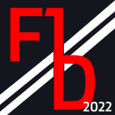

About F1 Draft
F1 Draft is an open source project created by Tom Williams
This website aims to find the most popular F1 Liveries throughout the large F1 community. The large collection of cars contains modern specifications like the new 2022 cars, and others from older generations.
SPACE AVAILABLE FOR ADVERTISING AND PARTNERSHIP!